Mendura CMMS : une maintenance qui fonctionne hors ligne.
Planificateur de maintenance et GMAO dans une seule application : plans pour machines et véhicules, pannes, ordres de travail et magasin de pièces. Sans cloud, sans serveur tiers, vos données restent dans l'atelier.
De la vidange en retard au rapport signé
Des routines d'atelier réelles : signaler, planifier, exécuter, documenter. Le tout sur l'appareil dans votre poche.
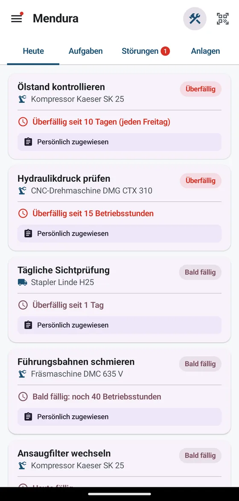
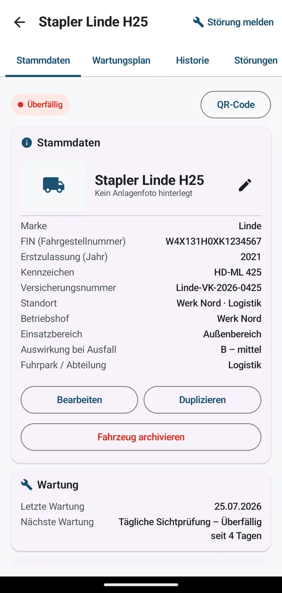
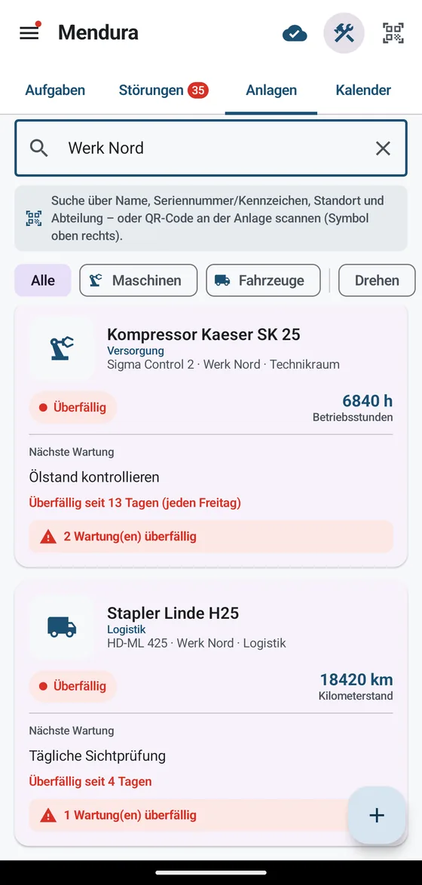
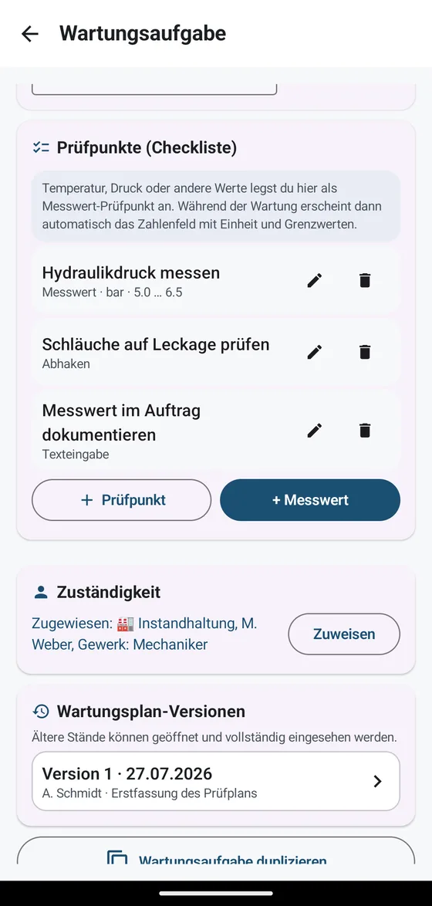
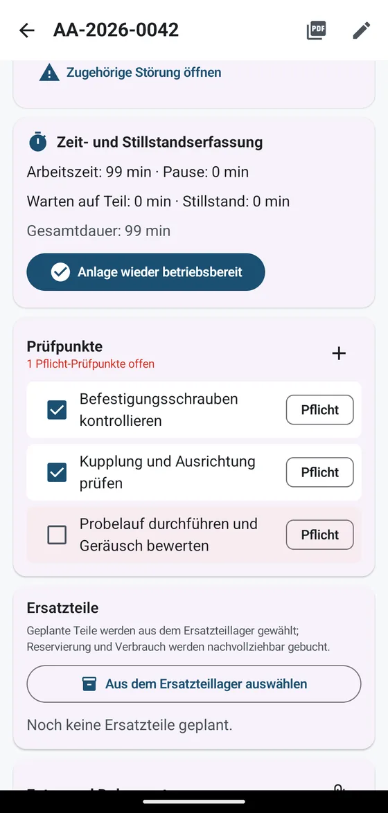
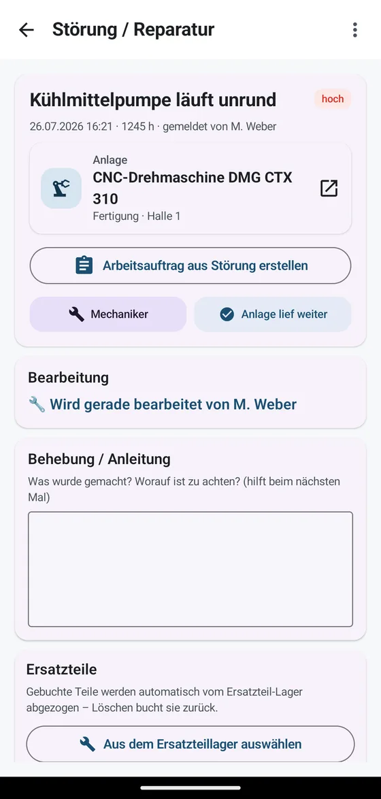
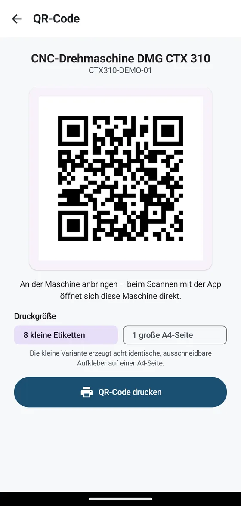
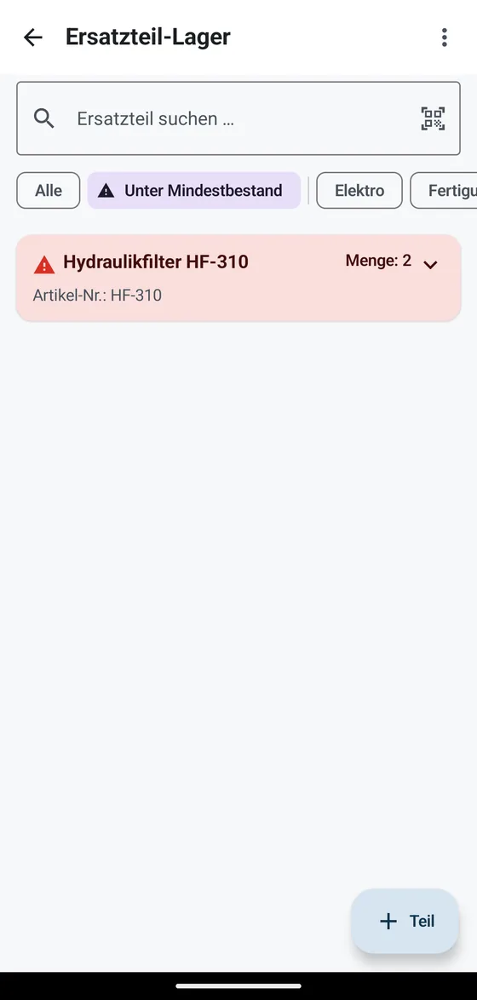
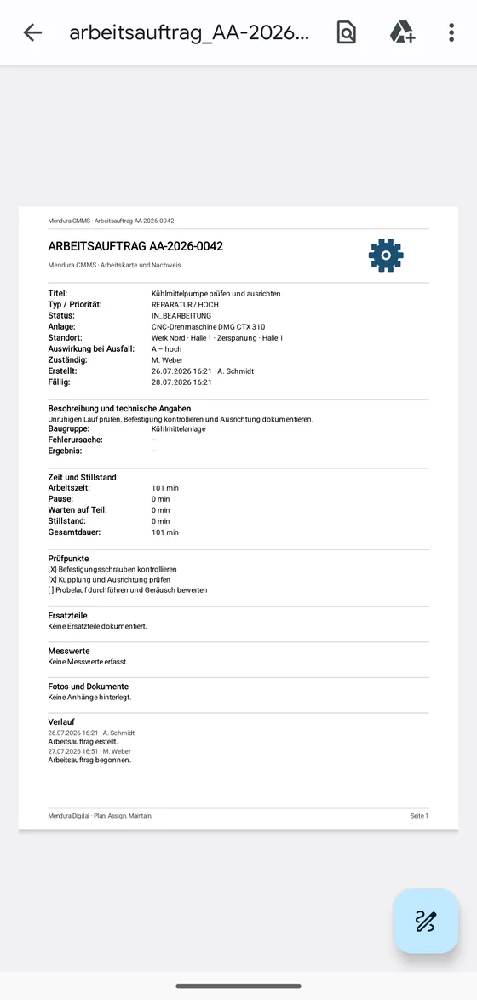
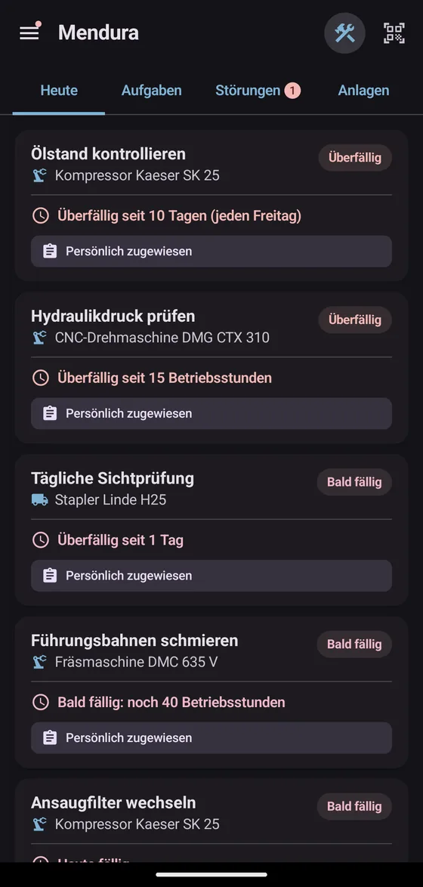
Pour les ateliers qui travaillent encore sur papier
Tout au même endroit
Machines et véhicules (avec plaque et numéro de série), leur fiche, un QR code et des plans par temps ou heures de fonctionnement. L'application vous dit ce qui est dû.
De la panne à la preuve
Signalez les pannes, traitez les ordres avec points de contrôle obligatoires, enregistrez les pièces et générez des rapports PDF prêts pour l'audit.
Vos données restent chez vous
Aucun compte chez nous, aucun serveur tiers. Les appareils se synchronisent directement sur votre réseau local, signés et chiffrés.
Uniquement ce dont vous avez besoin
Ordres de travail, points et classement sont des modules activables ou désactivables. Un petit atelier commence léger et ajoute plus tard ce qu'il lui faut.
La prise en main ? Schraubi s'en charge.
Pas de journée de formation, pas de manuel, personne n'a besoin de s'asseoir à côté du nouveau : Mendura amène son propre formateur. Schraubi, la petite mascotte engrenage, guide chaque personne pas à pas dans l'application, sur de vrais flux de travail plutôt que sur des diapositives.
- 9 chapitres, séparés par rôle : les techniciens apprennent à signaler, entretenir et clôturer. Planificateurs et administrateurs ont leurs propres chapitres.
- Exercices réels : signaler une panne, réaliser un entretien, clôturer un ordre. Schraubi montre exactement où appuyer.
- Avec contrôle de compréhension : la progression est enregistrée par personne, le responsable voit qui maîtrise l'outil.
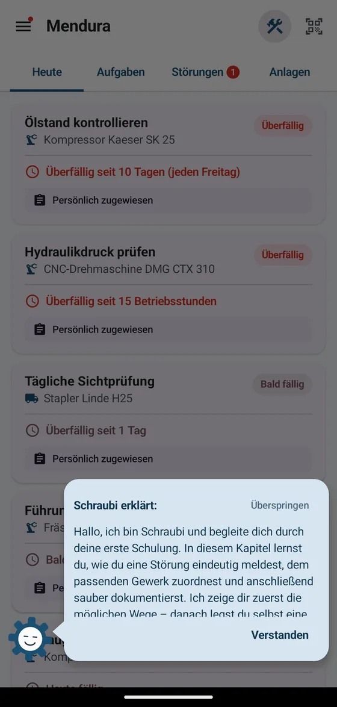
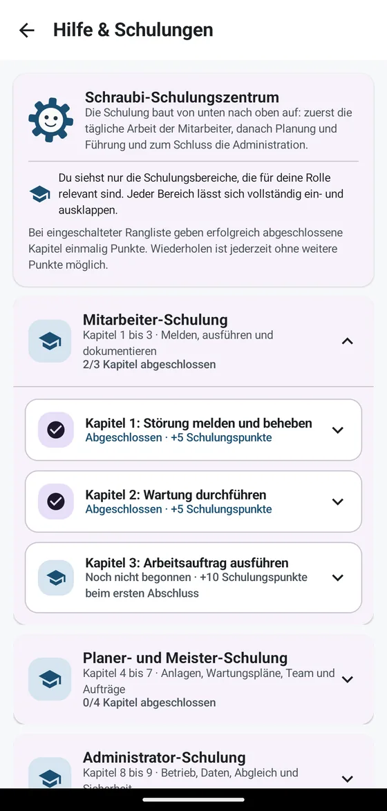
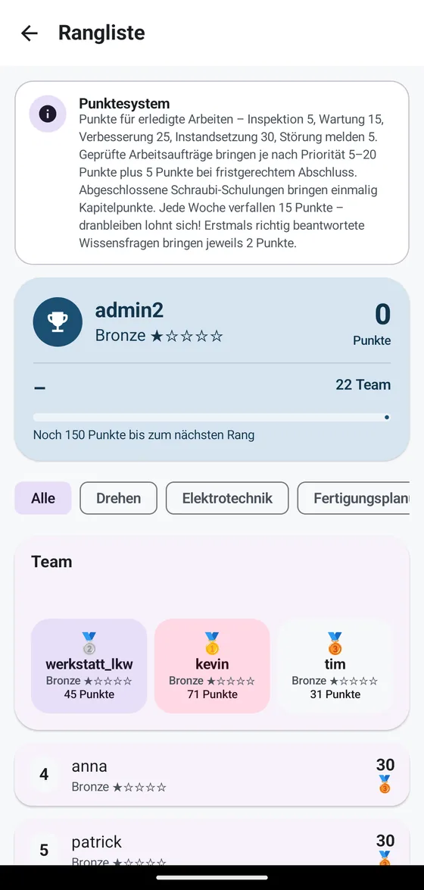
Une maintenance qui motive
Documenter, c'est la corvée que tout le monde repousse à demain. C'est exactement là que Mendura intervient : le travail accompli rapporte des points, et soudain naît cette petite ambition qui vous fait retourner à la machine. Qui mène cette semaine ? Tout le monde le voit.
- Des points pour du vrai travail : inspections, entretiens, réparations et pannes signalées alimentent votre score.
- Des rangs, pas de pression : chacun progresse depuis le bronze à son rythme. Le classement hebdomadaire repart de zéro, les nouveaux ont donc aussi leur chance.
- L'effet sportif : dès que les collègues commencent à se dépasser, la documentation se fait volontairement et proprement. C'est exactement ce qu'il faut à un historique de maintenance.
- Totalement optionnel : points et classement sont un module désactivable à tout moment dans les réglages d'administration.
Une licence. Toute l'entreprise.
Mendura CMMS
L'entreprise s'abonne une fois et toute l'équipe travaille avec, sur autant d'appareils que nécessaire, y compris personnels. Après l'essai, vous décidez tranquillement.
- Nombre d'appareils illimité dans l'entreprise
- Synchronisation sur le réseau local, sans cloud
- Mises à jour continues incluses